PixelLakeHeart — 游戏实时截屏
游戏引擎实际渲染输出（1536×864 逻辑 512×288 三倍放大）· 本次改动：多区域地图 + 16-bit 日式像素风重绘（钓手/店主/木桥/圆冠树/钓竿）
🚶 多区域地图 · 向右探索四个新区域（本次改动）
码头 → 木桥 → 芦苇滩 → 湖心岛 → 深水区：走到屏幕边缘自动切换区域（带冷却防抖、存档记录）。每个区域各有 16-bit 像素画背景（日/夜 ×4 时段，共 25 张编译期内嵌）、独立前景地形与鱼群分布；深水区需购小船（$150）才能进入。
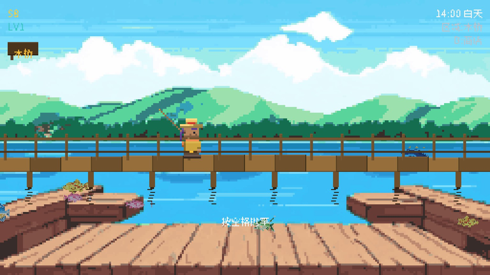
木桥 · 白天 全宽拱形桥面 + 双横栏 + 水中桩倒影
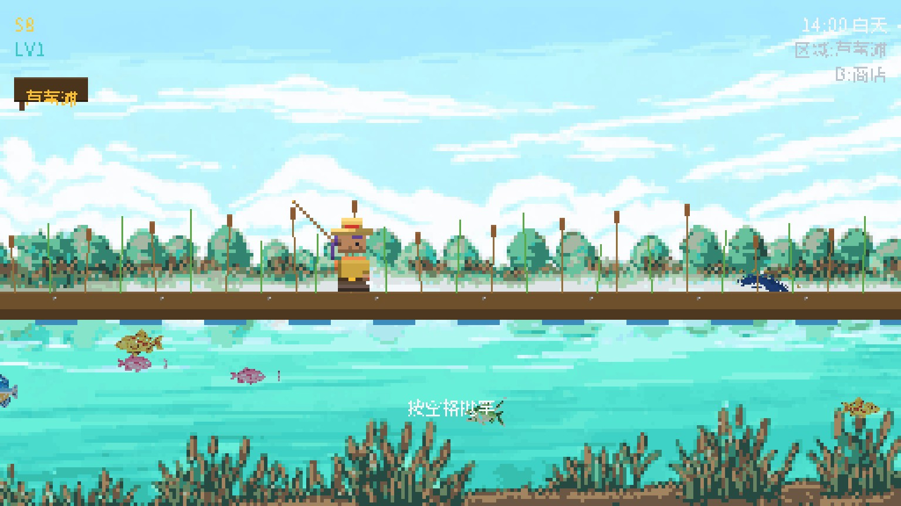
芦苇滩 · 白天 泥岸水洼 + 摇曳芦苇香蒲
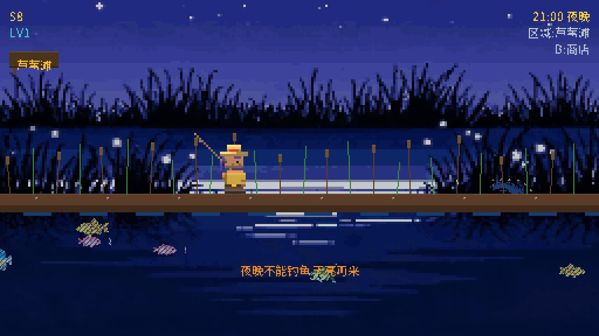
芦苇滩 · 夜晚AI 夜景
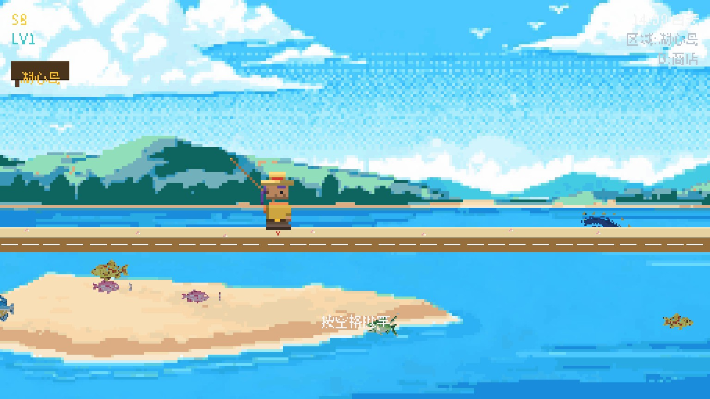
湖心岛 · 白天 沙滩贝壳海星 + 湿沙浪线
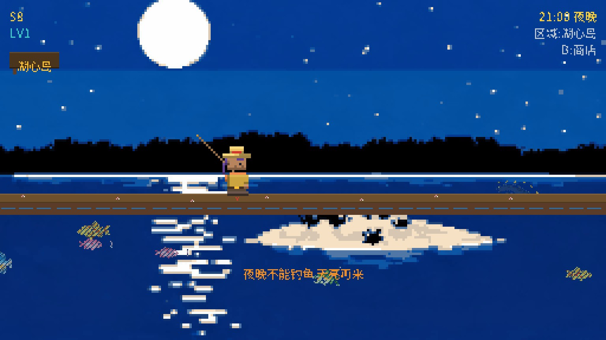
湖心岛 · 夜晚AI 夜景
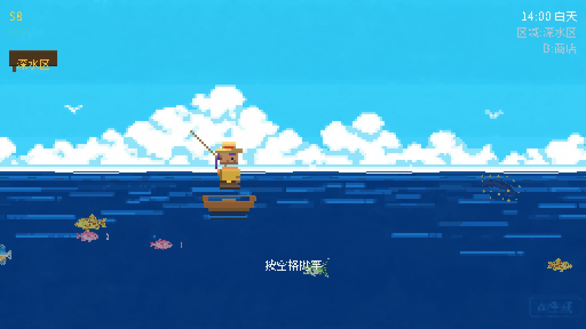
深水区 · 白天 乘小船出海（需购船）
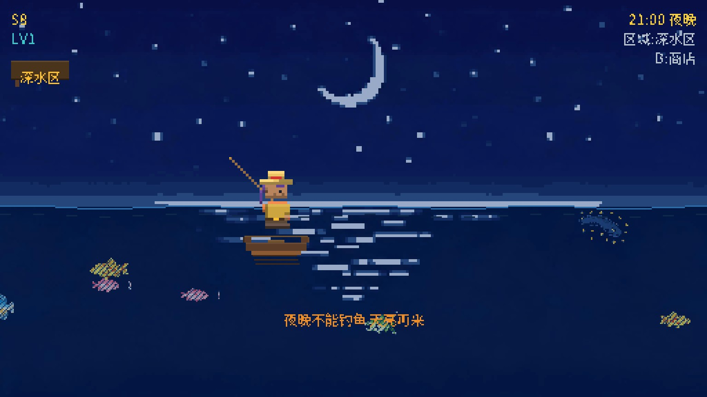
深水区 · 夜晚AI 夜景
🎨 16-bit 日式像素风重绘 · 草帽钓手 / 鲜鱼市场店主 / 钓竿全程可见（本次改动）
角色从 Minecraft 体素小人重绘为干净色块的 16-bit 日式像素风：玩家=草帽+橙围巾钓手（走路摆臂/待机呼吸眨眼/钓鱼抬臂），店主=白毛巾头带+圆眼镜+八字胡的鲜鱼市场大叔（藏青法被+白围裙，手臂搭木柜台）；钓竿全程握在手里——走路/待机斜扛肩后，钓鱼指向水面（竿梢+握把缠带）；背景树改三段色圆冠树，栈桥换 16-bit 木板桥。

码头 · 草帽钓手 钓竿斜扛肩后 + 圆冠树 + 木板栈桥

行走动画 摆臂摆腿 + 围巾飘动 + 肩后钓竿

等待咬钩 双臂抬向握把，竿梢指向水面

抛竿 竿身+亮色脊线+金色竿梢

新店主 · 鲜鱼市场大叔 毛巾头带/圆眼镜/八字胡/法被围裙

商店 · 中文 木柜台 + 碎冰 + 展示鱼
🖼️ 全画面 AI 重绘（上轮改动）
游戏内全部背景图改由 AI 像素画绘制：湖景四时段（水线对齐 y=150）、标题、风暴/鱼竿/码头剧情 CG、商店内景，共 9 张；编译期内嵌（单 exe 交付），不做任何高光/阴影后处理，保持原汁像素感。
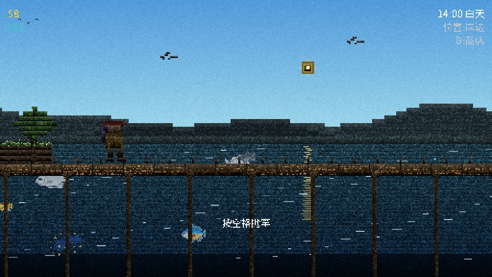
旧版 · 白天湖景 程序化体素绘制
新版 · 白天湖景 AI 像素画背景 + 码头/角色叠加

新版 · 夜晚AI 夜景

新版 · 标题 AI 标题画

新版 · 序章风暴 AI 风暴 CG + 雨闪电特效
新版 · 商店 AI 内景 + 店主/菜单叠加
🖼️ AI 原始像素画（512×288 · 48 色量化 · 编译期内嵌 · 共 25 张）
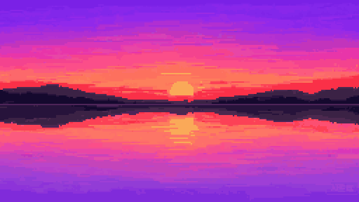
dusk 码头 · 黄昏
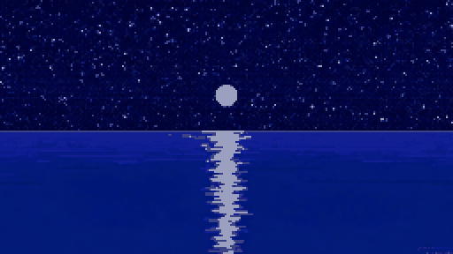
night 码头 · 夜晚
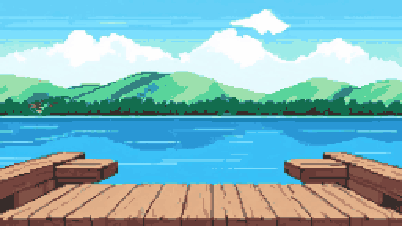
bridge_day 木桥 · 白天 新增
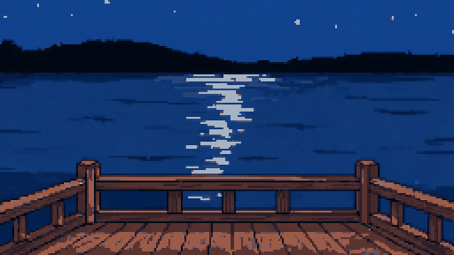
bridge_night 木桥 · 夜晚 新增
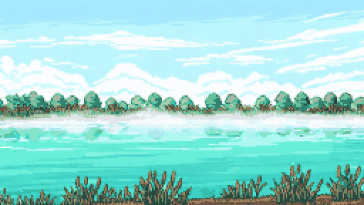
reed_day 芦苇滩 · 白天 新增
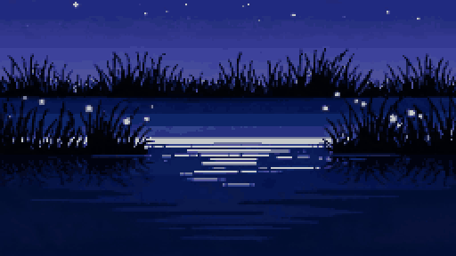
reed_night 芦苇滩 · 夜晚 新增
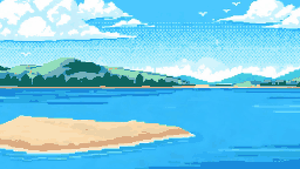
isle_day 湖心岛 · 白天 新增
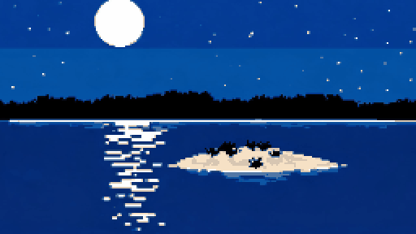
isle_night 湖心岛 · 夜晚 新增
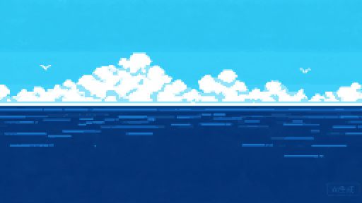
deep_day 深水区 · 白天 新增
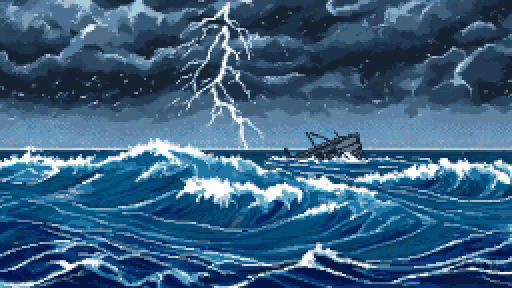
storm 风暴（序章）
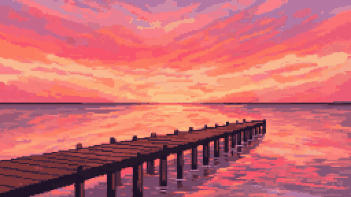
pier 码头（捏脸/序章）
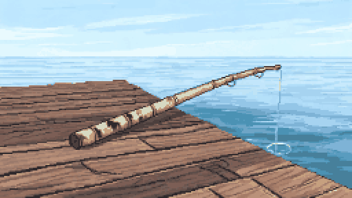
rod 旧竹竿（序章 CG）
🐛 鱼类修复 · 前后对比（之前每条鱼都渲染成实心色块"全是鲈鱼"）

修复前 · 渔获画面 鱼是实心色块，看不出鱼种

修复后 · 渔获画面 金鳟的鱼形、鳞片、鱼鳍完整显示

修复前 · 图鉴 十格全是同色方块

修复后 · 图鉴 十种鱼各归各位：鲤鱼/鲈鱼/银鲤/鲶鱼/大口鲈/蓝鳃/鲑鱼/金鳟/电鳗/湖龙
🎣 鱼池分布修复 · "怎么全是鲈鱼"的第二个根因
精灵修好后仍"全是鲈鱼"——因为岸边钓点只投放了鲤鱼+鲈鱼两种。现在银鲤、蓝鳃开放到岸边，深水需船，10 种鱼全图可达。
修复前 · 岸边 100% 只有两种鱼
鲤鱼 53% · 鲈鱼 47%
码头：6 种 · 深水(无船)：6 种
修复后 · 岸边 4 种起步（500 杆实测）
鲤鱼 35% · 鲈鱼 32% · 银鲤 16% · 蓝鳃 14%
码头：6 种 · 深水+船：全部 10 种（含湖龙 2%）
主场景 · 昼夜（重点看：夜晚已提亮，不再黑漆漆）
白天 · 湖边码头timeH=14
夜晚 · 提亮后夜间亮度 22→45

黎明timeH=6.5

黄昏timeH=17.5
钓鱼流程
抛竿 鱼线飞行中
等待咬钩 鱼正在接近浮标

咬钩！ 浮标抖动，快收杆
渔获展示 64×64 像素鱼 + 英文

渔获（中文） 真字体渲染（非点阵）

收线 · 小鱼 绿区大，容易命中

收线 · 湖龙Boss 绿区极小
行走动画
标题 / 捏脸 / 序章

中文标题 Noto 真字体内嵌渲染

捏脸 · 中文 皮肤/发型/服装

序章插画 1

序章 · 中文
商店 / 背包
商店 · 中文 店主 + 商品列表
背包 · 中文 全 10 种鱼图鉴
生成于 SELFTEST 自动化渲染 · 33 张全场景（含 8 张新区域）· 其余（英文版/更多序章）在 shots/ 目录